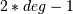
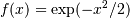
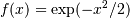
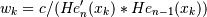
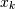
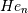
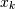
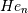

numpy.polynomial.hermite_e.hermegauss¶
- numpy.polynomial.hermite_e.hermegauss(deg)[source]¶
Gauss-HermiteE quadrature.
Computes the sample points and weights for Gauss-HermiteE quadrature. These sample points and weights will correctly integrate polynomials of degree  or less over the interval
![[-\inf, \inf]](../../_images/math/0f69f346992e9eb1a7fae72b5fa89277c1d0101c.png) with the weight function .
with the weight function .Parameters : deg : int
Number of sample points and weights. It must be >= 1.
Returns : x : ndarray
1-D ndarray containing the sample points.
y : ndarray
1-D ndarray containing the weights.
Notes
The results have only been tested up to degree 100, higher degrees may be problematic. The weights are determined by using the fact that

where is a constant independent of
 and 
is the k’th root of , and then scaling the results to get
the right value when integrating 1.
and 
is the k’th root of , and then scaling the results to get
the right value when integrating 1.